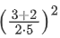

1️⃣ Escribir un programa que pregunte el nombre del usuario en la consola y después de que el usuario lo introduzca muestre por pantalla la cadena ¡Hola
2️⃣ Escribir un programa que pregunte el nombre del usuario en la consola y un número entero e imprima por pantalla en líneas distintas el nombre del usuario tantas veces como el número introducido.
3️⃣ Escribir un programa que pregunte el nombre del usuario en la consola y después de que el usuario lo introduzca muestre por pantalla el nombre en mayúsculas y el número de caracteres que contiene en líneas distintas.
4️⃣ Escribir un programa que realice la siguiente operación aritmética.
5️⃣ Una juguetería tiene mucho éxito en dos de sus productos: payasos y muñecas. Suele hacer venta por correo y la empresa de logística les cobra por peso de cada paquete así que deben calcular el peso de los payasos y muñecas que saldrán en cada paquete a demanda. Cada payaso pesa 112 g y cada muñeca 75 g. Escribir un programa que lea el número de payasos y muñecas vendidos en el último pedido y calcule el peso total del paquete que será enviado.
6️⃣ Escribir un programa que pregunte al usuario su edad y muestre por pantalla si es mayor de edad o no.
7️⃣ Escribir un programa que pida al usuario dos números y muestre por pantalla su división. Si el divisor es cero el programa debe mostrar un error.
8️⃣ Escribir un programa que pida al usuario dos números y devuelva su división. Si el usuario no introduce números debe devolver un aviso de error y si el divisor es cero también.
9️⃣ Escribir un programa para una empresa que tiene salas de juegos para todas las edades y quiere calcular de forma automática el precio que debe cobrar a sus clientes por entrar. El programa debe preguntar al usuario la edad del cliente y mostrar el precio de la entrada. Si el cliente es menor de 4 años puede entrar gratis, si tiene entre 4 y 18 años debe pagar 5€ y si es mayor de 18 años, 10€.
🔟 Escribir un programa que pida al usuario una palabra y la muestre 10 veces por pantalla.
1️⃣1️⃣ Escribir un programa que pregunte al usuario su edad y muestre por pantalla todos los años que ha cumplido (desde 1 hasta su edad).
1️⃣2️⃣ Escribir un programa que pida al usuario un número entero positivo y muestre por pantalla todos los números impares desde 1 hasta ese número separados por comas.
1️⃣3️⃣ Escribir un programa que pida al usuario un número entero positivo y muestre por pantalla la cuenta atrás desde ese número hasta cero separados por comas.
1️⃣4️⃣ Escribir un programa que pregunte al usuario una cantidad a invertir, el interés anual y el número de años, y muestre por pantalla el capital obtenido en la inversión cada año que dura la inversión.